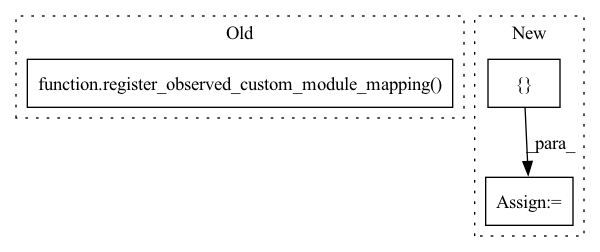

Pattern ID :18968
Before Change
quantized = cls(nnq.Conv2d.from_float(observed_module.conv))
return quantized
register_observed_custom_module_mapping( CustomModule, ObservedCustomModule)
register_quantized_custom_module_mapping(CustomModule, QuantizedCustomModule)
class M(torch.nn.Module):
def __init__(self):After Change
original_ref_m.conv2.bias = torch.nn.Parameter(original_m.custom.conv.bias.detach())
original_m.qconfig = default_qconfig
prepare_custom_config_dict = {
"float_to_observed_custom_module_class": {
CustomModule: ObservedCustomModule
}
}
convert_custom_config_dict = {
"observed_to_quantized_custom_module_class": {
ObservedCustomModule: QuantizedCustomModule
}In pattern: SUPERPATTERN
Frequency: 3
Non-data size: 3
Instances Fragment ID: 61673992
Project Name: pytorch/pytorch
Commit Name: 3ad797c93724d2bc402f85d8f5b57d5661915eaf
Time: 2020-10-14
Author: jerryzh@fb.com
File Name: test/quantization/test_quantize.py
M Class Name: TestPostTrainingStatic
N Class Name: TestPostTrainingStatic
M Method Name: test_custom_module_class(1)
N Method Name: test_custom_module_class(1)
M Parent Class: QuantizationTestCase
N Parent Class: QuantizationTestCase
M File Name: test/quantization/test_quantize.py
N File Name: test/quantization/test_quantize.py
M Start Line: 630
M End Line: 631
N Start Line: 668
N End Line: 681
Before Change
// TODO: add other quant types after mixed mode support
for quant_type in [QuantType.STATIC]:
// register observed and quantized custom module classes
register_observed_custom_module_mapping( CustomModule, ObservedCustomModule)
register_quantized_custom_module_mapping(CustomModule, QuantizedCustomModule)
m = torch.fx.GraphModule(original_m, CustomTracer().trace(original_m))
qconfig_dict = {"": default_qconfig}After Change
// TODO: add other quant types after mixed mode support
for quant_type in [QuantType.STATIC]:
qconfig_dict = {
"": default_qconfig,
"custom_module_class":
[(CustomModule, ObservedCustomModule, QuantizedCustomModule)]}
// check prepared model
m = prepare_fx(original_m, qconfig_dict)
// calibration
m(data) Fragment ID: 61673989
Project Name: pytorch/pytorch
Commit Name: 7f6a1b2bd5eca2d25c70afe233f8b6878fec241d
Time: 2020-10-12
Author: jerryzh@fb.com
File Name: test/quantization/test_quantize_fx.py
M Class Name: TestQuantizeFx
N Class Name: TestQuantizeFx
M Method Name: test_custom_module_class(1)
N Method Name: test_custom_module_class(1)
M Parent Class: QuantizationTestCase
N Parent Class: QuantizationTestCase
M File Name: test/quantization/test_quantize_fx.py
N File Name: test/quantization/test_quantize_fx.py
M Start Line: 711
M End Line: 737
N Start Line: 708
N End Line: 722
Before Change
quantized = cls(nnq.Conv2d.from_float(observed_module.conv))
return quantized
register_observed_custom_module_mapping( CustomModule, ObservedCustomModule)
register_quantized_custom_module_mapping(CustomModule, QuantizedCustomModule)
class M(torch.nn.Module):
def __init__(self):After Change
CustomModule: ObservedCustomModule
}
}
convert_custom_config_dict = {
"observed_to_quantized_custom_module_class": {
ObservedCustomModule: QuantizedCustomModule
}
}
m = prepare(
original_m,
prepare_custom_config_dict=prepare_custom_config_dict)
self.checkObservers(m, None, prepare_custom_config_dict) Fragment ID: 61673991
Project Name: pytorch/pytorch
Commit Name: 30d687522d708fb3e4041e378d4f4ce420a86157
Time: 2020-10-19
Author: jerryzh@fb.com
File Name: test/quantization/test_quantize.py
M Class Name: TestPostTrainingStatic
N Class Name: TestPostTrainingStatic
M Method Name: test_custom_module_class(1)
N Method Name: test_custom_module_class(1)
M Parent Class: QuantizationTestCase
N Parent Class: QuantizationTestCase
M File Name: test/quantization/test_quantize.py
N File Name: test/quantization/test_quantize.py
M Start Line: 630
M End Line: 631
N Start Line: 668
N End Line: 681